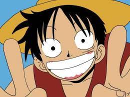
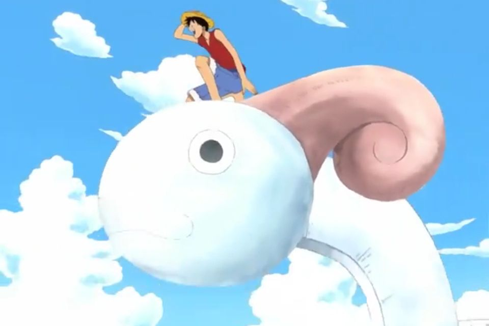
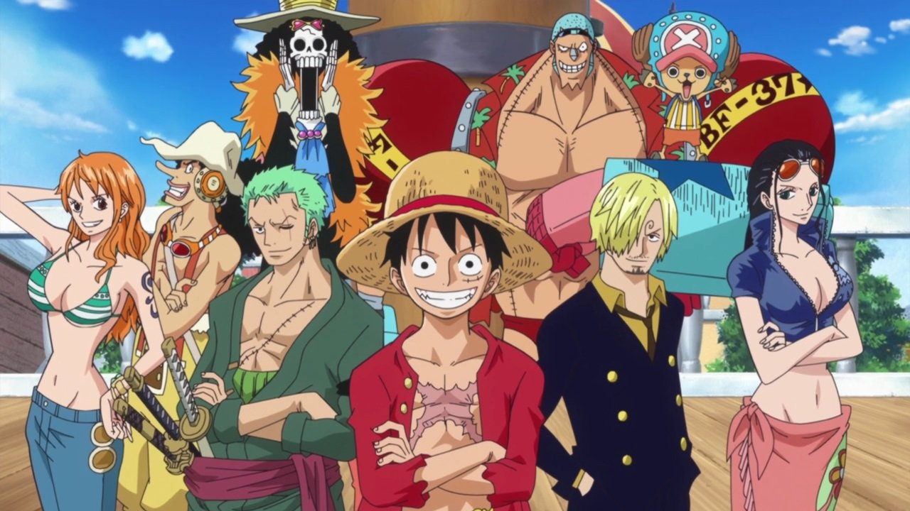

O conto do Mugiwara no luffy
Luffy é o capitão dos Piratas do Chapéu de Palha.
Quando criança, ele comeu uma Gomu Gomu no Mi, uma fruta que lhe deu o poder do homem-borracha em troca de sua habilidade de nadar.
Filho de Monkey D. Dragon, o jovem sonha em se tornar o Rei dos Piratas, título que ninguém ocupa desde a execução de Gol D.

O sonho de Luffy
Luffy tem o sonho de ser o Rei dos Piratas, que o mesmo repete essa fala durante várias vezes ao decorrer da obra,
no entanto ele guardo consigo mesmo seu verdadeiro objetivo, que é, ser livre.
Luffy quer ser o homem mais livre vivo, quer que todos tenham a liberdade de fazer o que der na telha,
ele deseja fazer um grande banquete com todas as pessoas do planeta, sem se importar com raça nem etnia, sem julgamentos. Apenas sendo livre.

Os Piratas do Chapéu de Palha
Como todo pirata que se preze, luffy tem o seu bando de piratas que atualmente, é muito vasta e extensa contando até mesmo com uma frota ao seu lado.
Contudo, não são piratas como você deve esta imaginando, são incriveis e bondosos, entretanto, são piratas que só fazem aquilo que querem.
Descrição da tripulação
